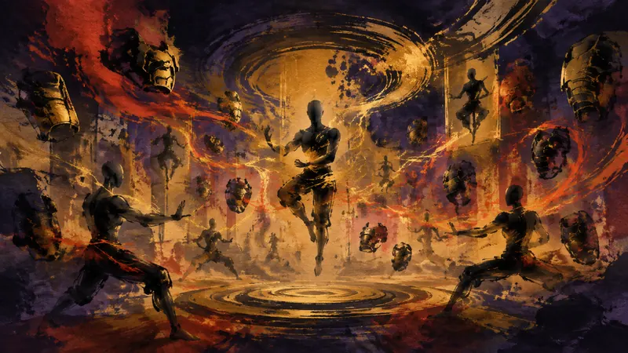

先鴉｜黎明快訊
《七龍珠 異戰 3》揭曉角色自訂介紹影片 新種族「人造人」參戰、可向 130 名以上角色學習
玩家能動性：政策如何限制它、產業如何形塑它、敘事設計如何實現它。

萬代南夢宮公開《七龍珠 異戰 3》新影片，將自訂化身放在宣傳核心，展示外觀選擇、戰鬥配置與角色培養方向。遊戲目前確認提供六種族，並有超過 130 名可學習角色，新增「人造人」作為可選種族，讓玩家能依照偏好打造自己的戰士。這些設定顯示，化身不只是外觀上的自我投射，也與戰鬥風格選擇相連；但現有資訊尚未說明各種配置是否會實際改變玩家在遊戲世界中的行動。
先鴉觀點
自訂化身把玩家對外觀與戰鬥風格的選擇放到遊戲核心，創作自己的戰士本身就是一種遊玩樂趣。選項數量不等於能動性；真正值得看的是這些配置是否改變玩家在世界中的行動，而不只是提供更多表格可填。
本段為 AI 產出的觀點，自動發布，人工於發布後複核。